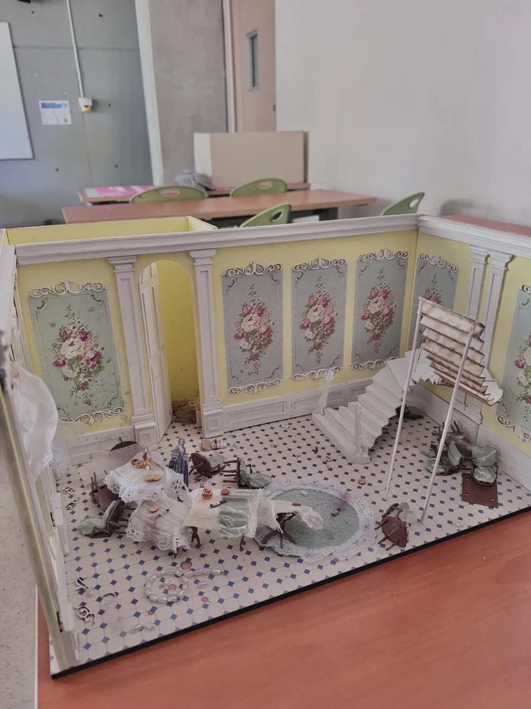

I · Inspirations
Des intérieurs luxueux, et des tables abandonnées après la fête.
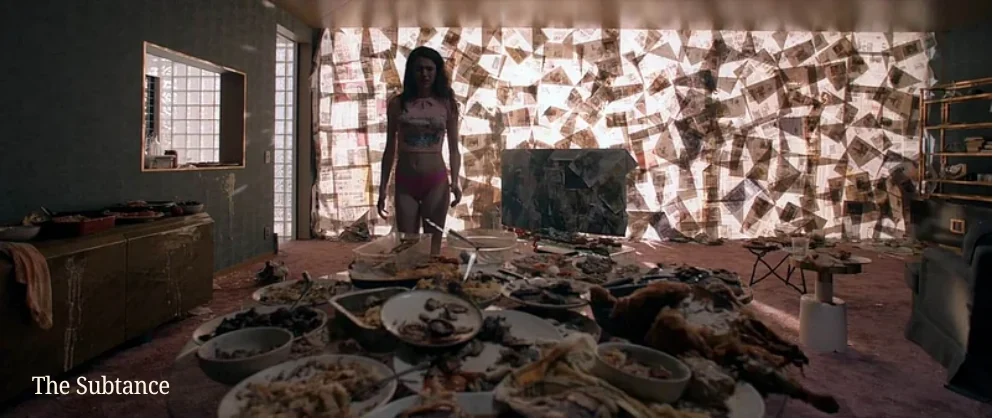
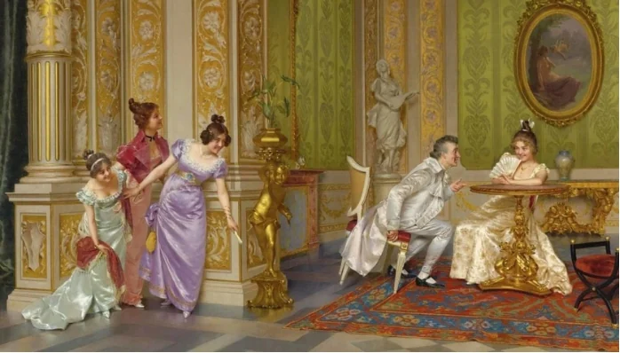
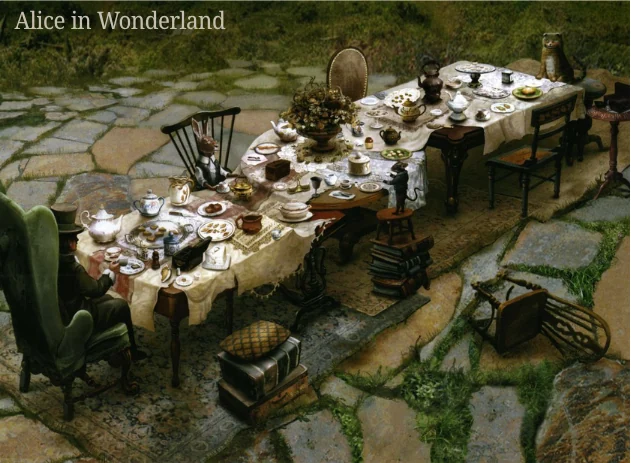
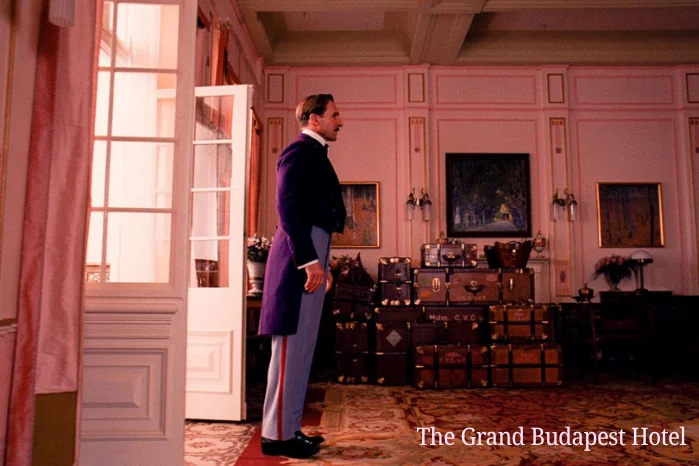
II · Couleurs et matières
Des tons pastel, de l'or et du bois : un décor qui imite la richesse.
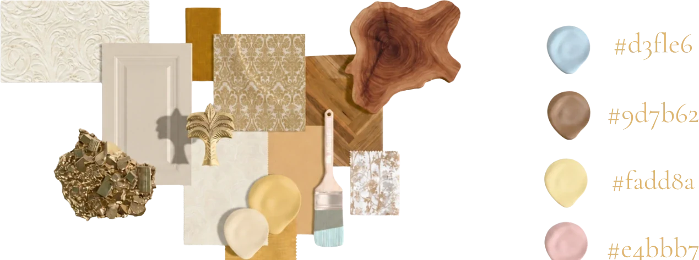
III · Plans
La pièce en plan, puis la même vue habillée de ses textures.
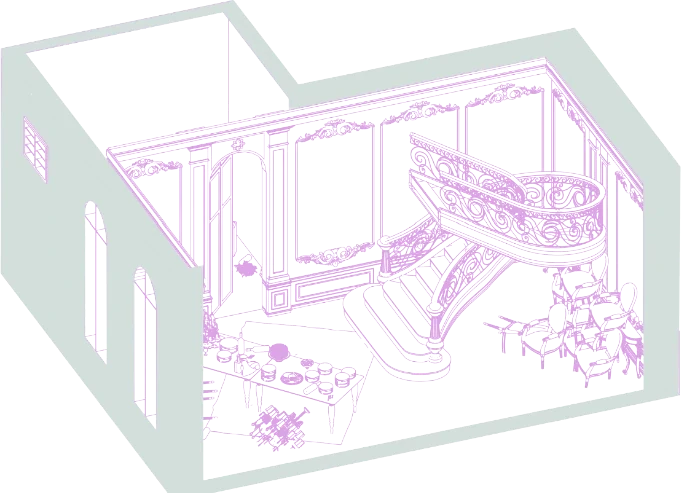
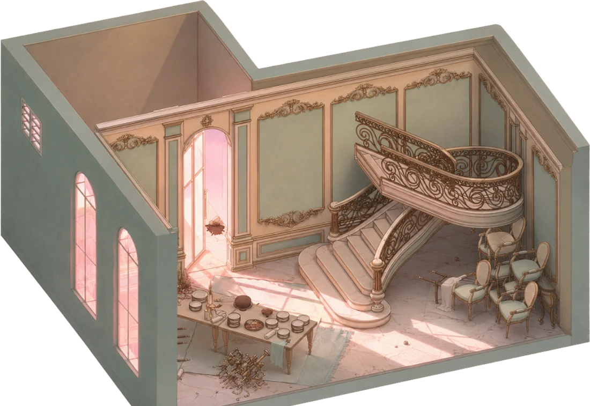
IV · Esquisses
La scène dessinée avant de passer au volume.
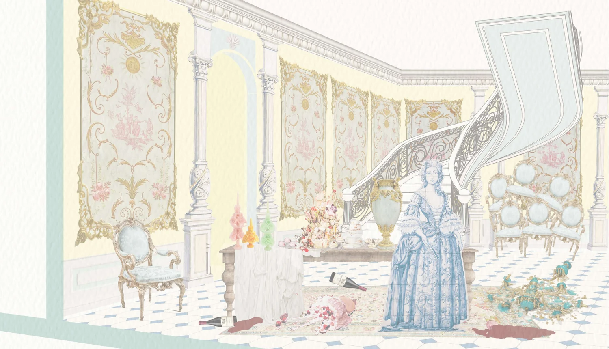
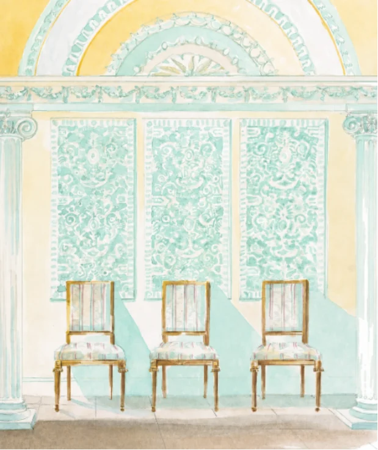
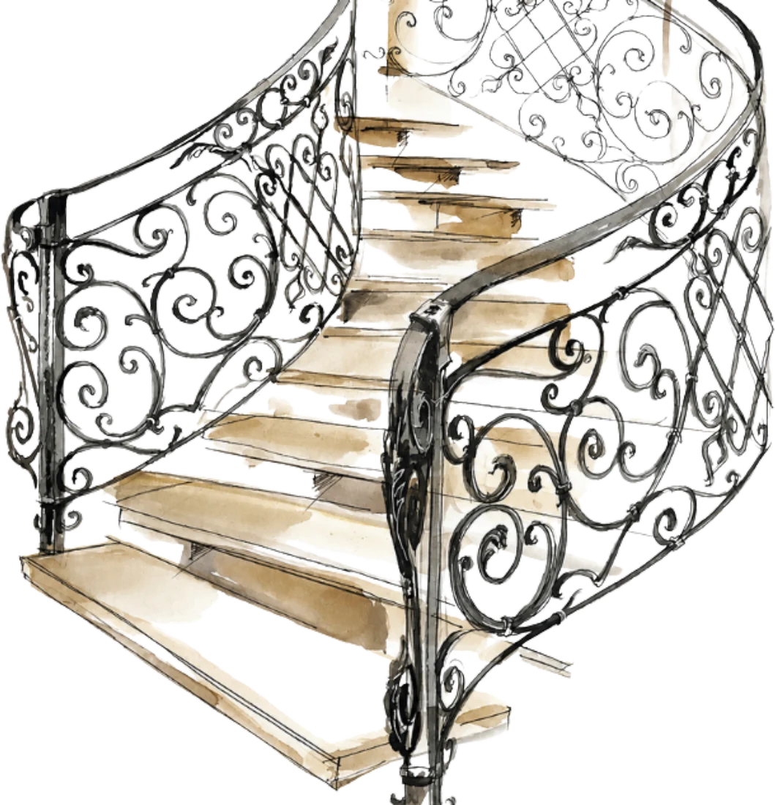
V · Mobilier et ornements
Chaque objet choisi pour son époque : lustre, fauteuils, tapisseries, moulures.

VI · Symboles
Métaphores, personnifications, allégories : c'est ce travail sur le texte qui a fixé les objets principaux de la scène.
Tout repose sur un contraste : le luxe de la fête face à la saleté de ce qu'il en reste. Depuis le début, la famille essaie de paraître riche. Dans cette dernière scène, le masque tombe.
Métaphores
Allégories
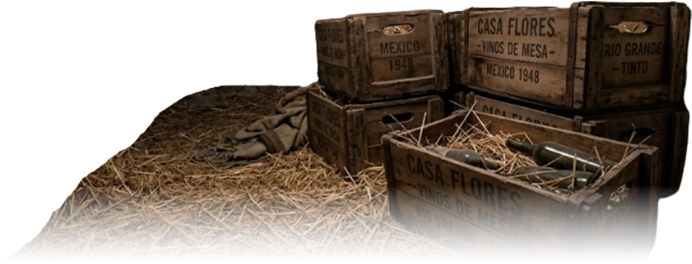
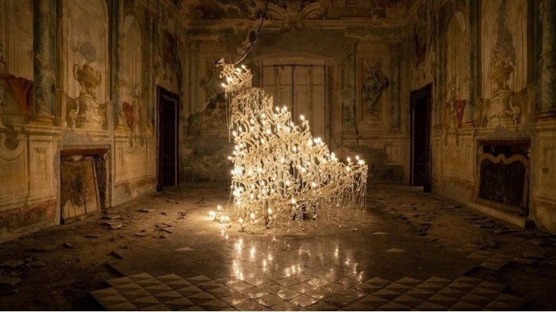
Personnifications
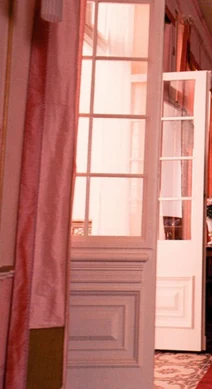
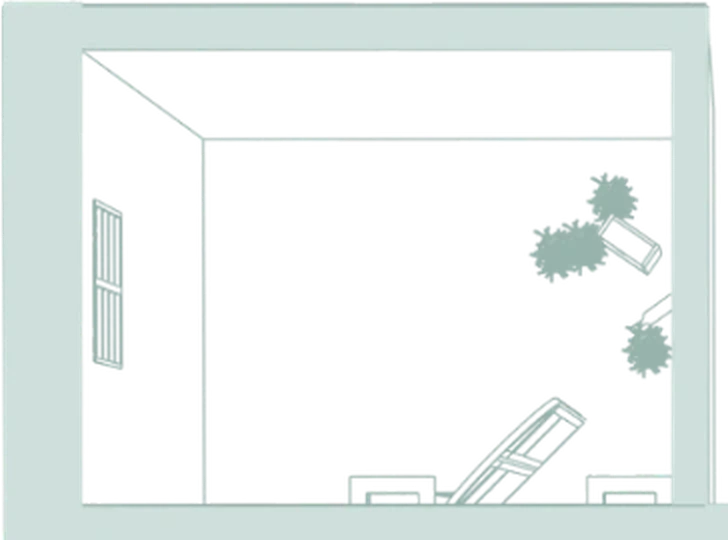